2025 State of the Association
2025 State of the Association
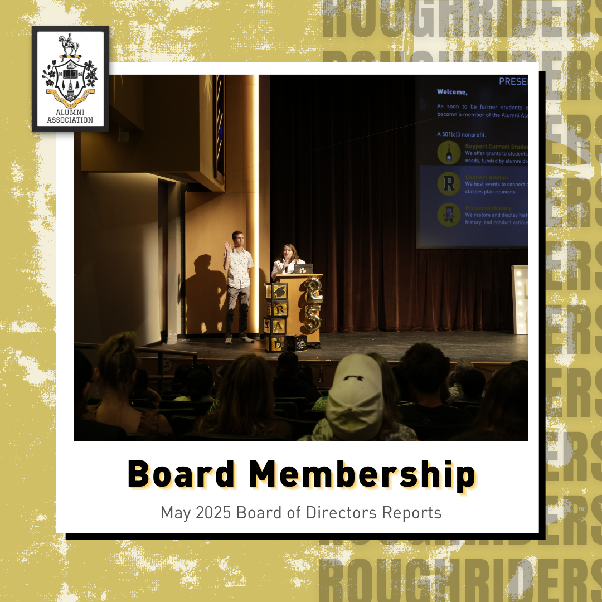
The Association has welcomed three new members to our Board of Directors this fiscal year.
Dylan Young, Class of 2016. He joined our Scholarship Committee last year and is participating again this year. As an advisor
at Oregon State University he brings a lot of great insight to the discussion from the perspective of someone who works with
current college students. He is also well connected with his class and alumni from the mid-2010s.
Jim & Kate McIlwain, Class of 1974. Jim and Kate were pivotal members of the Centennial Committee and participated in nearly
every single project in 2023. They were both active members of their class' reunion last year and helped make it a success.
They are both hands-on volunteers willing to step into a variety of roles as needed.
As part of a broader effort to increase transparency and engagement with the Board's work, we created a Board of Directors Roster.
This document includes the names and contact information of each board member, along with their current committee assignments.
It will be reviewed and updated annually, with the next revision scheduled for July.
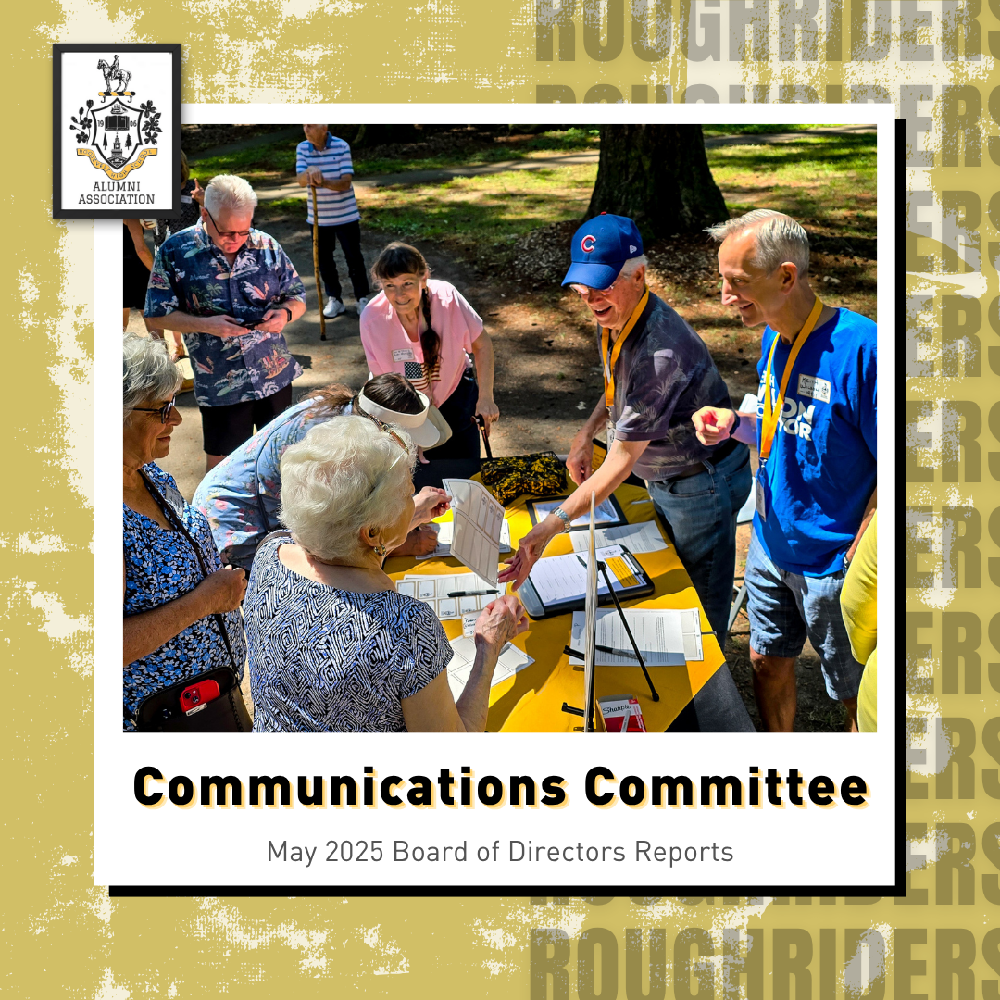
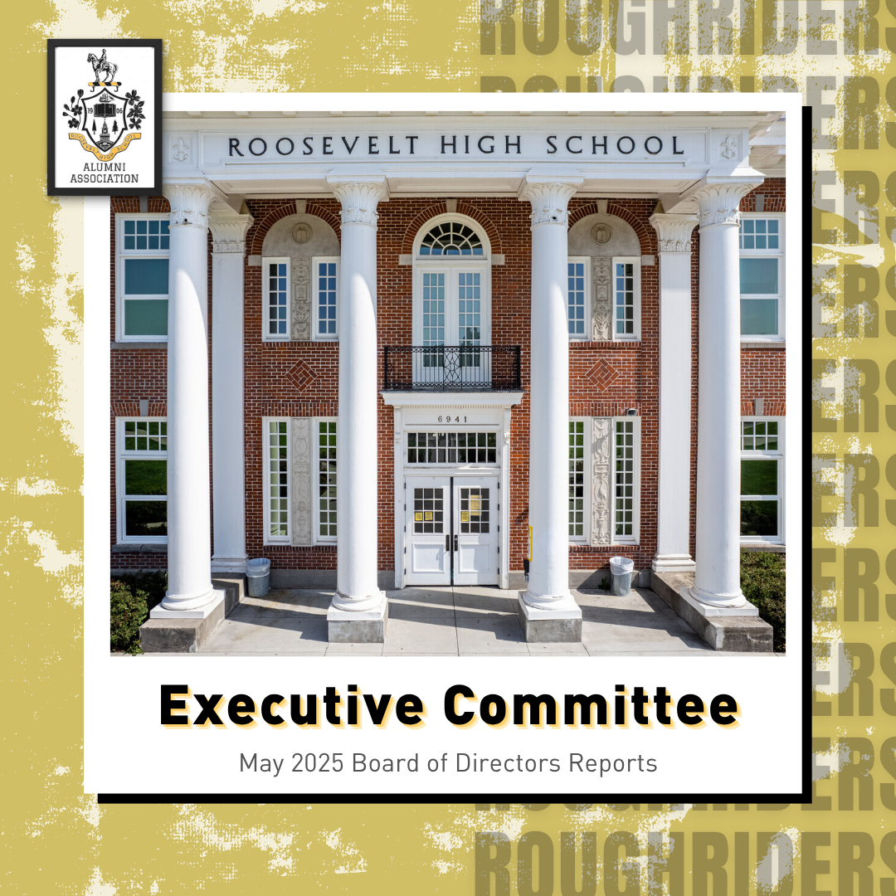
The committee meets bi-monthly and addresses all issues that are raised and must be handled before the next Board meeting. Issues the committee responds to include financial decisions such as small grant funding, support for committee projects, association planning, and a variety of other matters that must be dealt with in a timely manner. We typically meet at 6 PM on the 3rd Thursday of even-numbered months. Members can attend committee meetings via video or in-person.
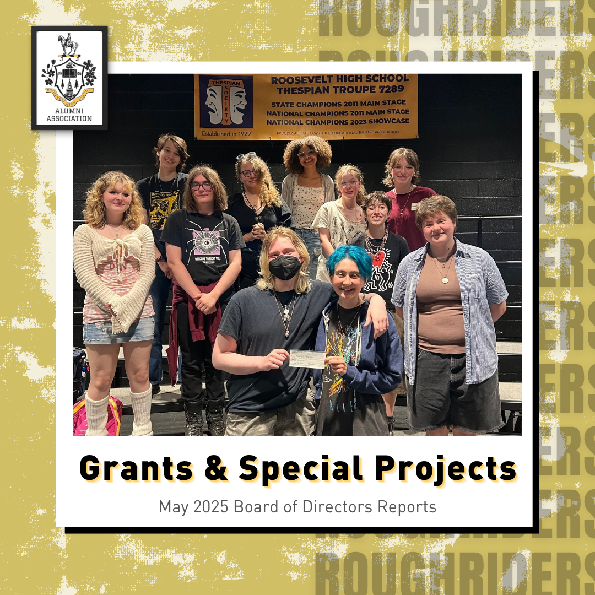
This section details the RHSAA's support of student programs, special projects, and other grant recipients over the past year. In addition to direct financial contributions made by the association, it also includes projects where RHSAA facilitated donations from outside organizations and individuals. Some of these donations benefited students but did not go through RHSAA's bank account. Some contributions were monetary, while others involved donated goods such as sporting equipment. These efforts reflect our commitment to connecting resources with student needs in a variety of ways.
| Group/Project | Award | Award Date |
|---|---|---|
| Track Team Nationals | $800 | 6/1/2024 |
| Men's Basketball Tournaments | $4,000 | 6/26/2024 |
| Baseball & Softball History | $630 | 7/1/2024 |
| Dance Team | $250 | 7/2/2024 |
| Leadership Class | $1,000 | 8/26/2024 |
| Basketball Trophies | $200 | 9/2024 |
| Music Department | $1,000 | 9/12/2024 |
| Social Work Team (families in need) | $1,000 | 10/4/2024 |
| Homecoming BBQ | $1,100 | 10/5/2024 |
| Athletic History Cases | $8,560 | 10/2024 |
| Track Trophies | $200 | 11/2024 |
| Holiday Meals | $2,900 | 11-12/2024 |
| Miss Black Teen (Heleen Red Bird) | $500 | 1/21/2025 |
| Yearbook Ad | $250 | 1/24/2025 |
| Mosaic Covers | $1,362 | 1/29/2025 |
| Coach of the Year Plaques | $200 | 2/1/2025 |
| Baseball Team (Helmets) | $500 | 2/6/2025 |
| Muslim Student Association | $250 | 2/6/2025 |
| Baseball Team (Baseballs) | $500 | 2/20/2025 |
| Jasmin Reyes-Contreras (Study Abroad) | $625 | 2/24/2025 |
| Wrestling Team | $1,000 | 2/24/2025 |
| Girls Golf Team | $600 | 3/21/2025 |
| Tennis Balls & Rackets | $700 | 4/1/2025 |
| Senior Awards Ceremony | $500 | 4/18/2025 |
| Veterans Memorial | $126 | 4/22/2025 |
| Scholarships | $5,000 | 5/2025 (TBA) |
This list represents $32,653 in support our organization has given towards the school, the student body, and our alumni.
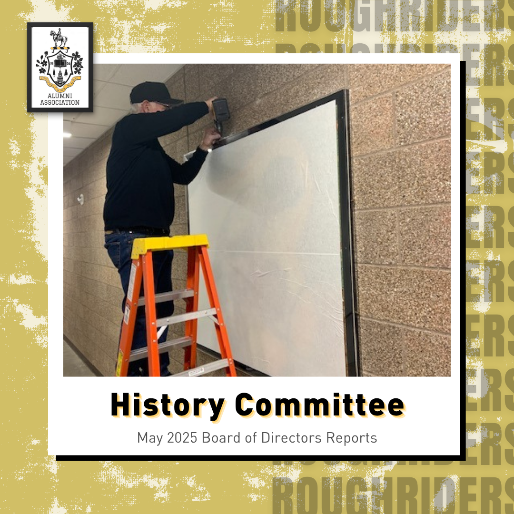
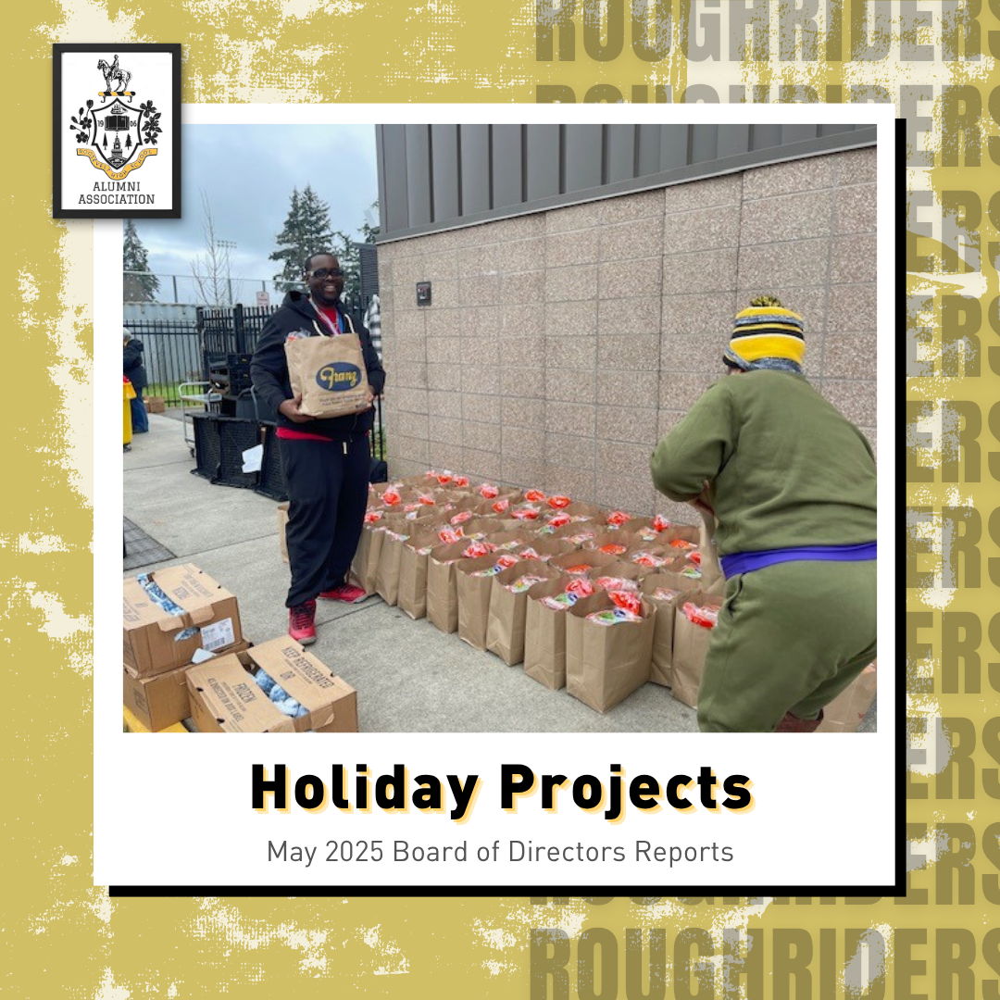
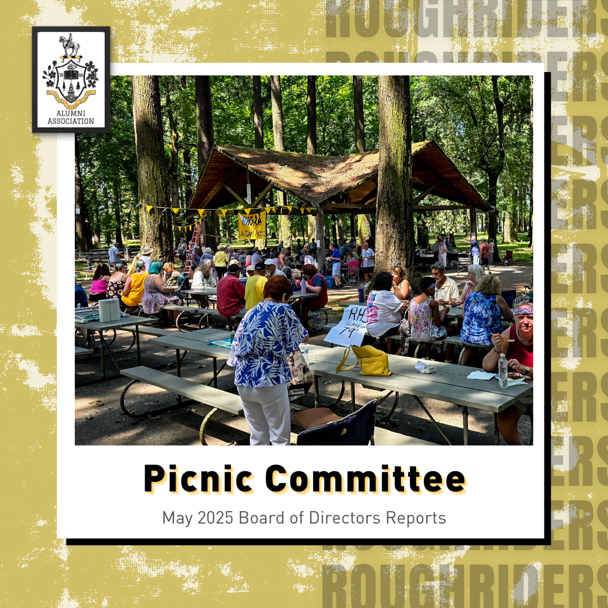
The 2024 picnic was a huge success with an estimated 300 attending. The majority stayed from 12 - 3pm, then most dispersed due
to heat, and was the reason that many didn't attend. This year we tried fried chicken as the main entrée, and everyone seemed
to enjoy the change. Barbara Lee Way developed a book with planning notes based on last year's result for future committees to
use. Thank you Barbara! After many months of planning, we were able to simplify the tasks of planning and putting on the picnic.
Many hands helped clean up at the end and the area was left clean, with people already discussing the next summer.
This year the committee is already hard at work planning the 2025 All Class Picnic. We currently have a committee of 5-7
people and will continue to meet over the next two months to nail down what is still needed and be sure we have all the supplies
and help needed. Due to the large attendance in 2023, we have kept the additional site this year to help accommodate everyone.
We will be asking for 'day of' volunteers to help make all the parts move smoothly. We are still looking for a photographer for
the event, as the few possibilities that we have reached out to either haven't answered or were above our budget amount.
The 2025 All-Class Picnic will be held on July 19th at Columbia Park from 12 - 4pm.
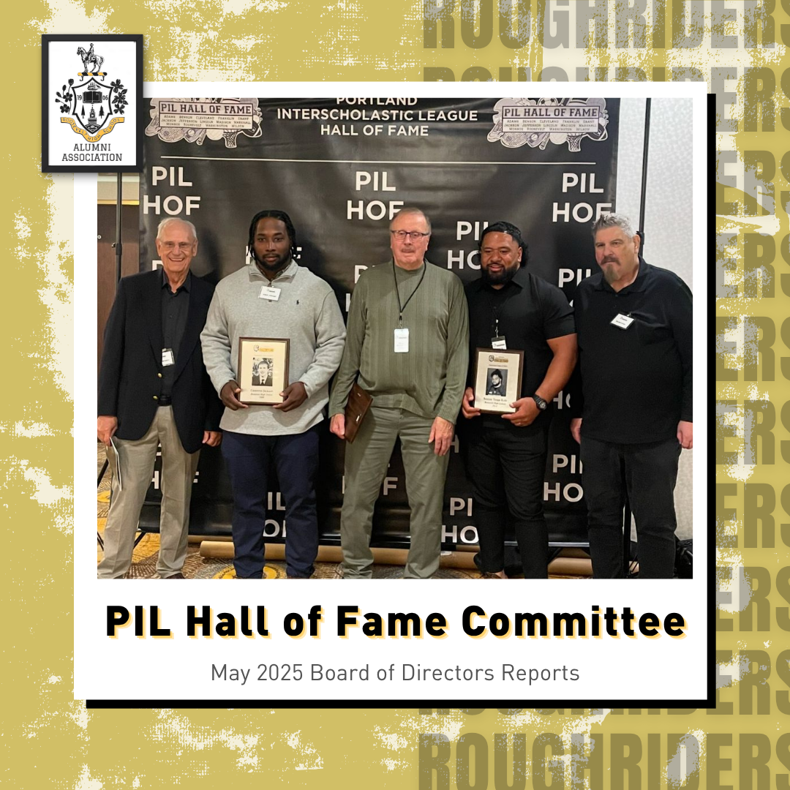
Three Roosevelt alumni were inducted into the PIL Hall of Fame with the 2024 class:
The 2025 induction will be held on November 1st and the class will have two Roosevelt alumni:
Our 2026 nominations have already been determined and we are now working on their applications:
Ellen Lougheed-Torchia, Eric Gustafson, and David Burke were nominated with the 2025 class and were very strong contenders,
which is why we will be submitting them again.
We have been looking for people to help Eddie de Freitas with the nomination process and background searches for new nominations.
Jim Kennison will continue to help Ed as he did this past year, and Kelley Cheney has agreed to also be a part of this team.
Kelley is strong in research and organization and will be a great addition to this team.
Our nomination forms will be presented in a different format. We will make them concise and to the point. The information will be
very clear. Jim was able to see the process at PPS when the nominations were presented and has a clear vision of what will need
to be accomplished for future Hall of Famers. We get 5 nominations per year. This is equal to a few other schools in the PIL as
we are one of the earliest schools in the PIL. 5 nominations is the top for any school. Some schools have fewer nominations, so
we are in a great position to increase our inductees in the future.
Our mission is to get in front of the information by about a year. As you can see from our five nominations for 2026, most of the
paperwork has been completed. Now we start asking for nominations for 2027 and start those searches immediately.
Athletic Director Willie Williams is also looking for information that we will need for future nominations. We've asked PPS to
give us information on First Team, Second Team, Honorable Mention, and PIL Championships from 2010 to present. We do not have
any of that information currently available to us.
As reported last year, we would like to establish a Roosevelt High School Athletic Hall of Fame that is separate from the PIL Hall
of Fame. We need to establish how athletes will be inducted, set criteria, guidelines, etc. We will still submit candidates to the
PIL, but also have our own program. Other schools in our league such as Wilson (Wells), Cleveland, and Grant have excellent HOF's,
perhaps they can help with the "blueprint" for us. RHS staff, students, or alumni would be able to nominate by filling out an
application similar to the PIL HOF application. We would like a committee under the RHSAA composed of 3-5 people who would go
over candidates. Many details to be worked out, but this is a big goal to work towards.
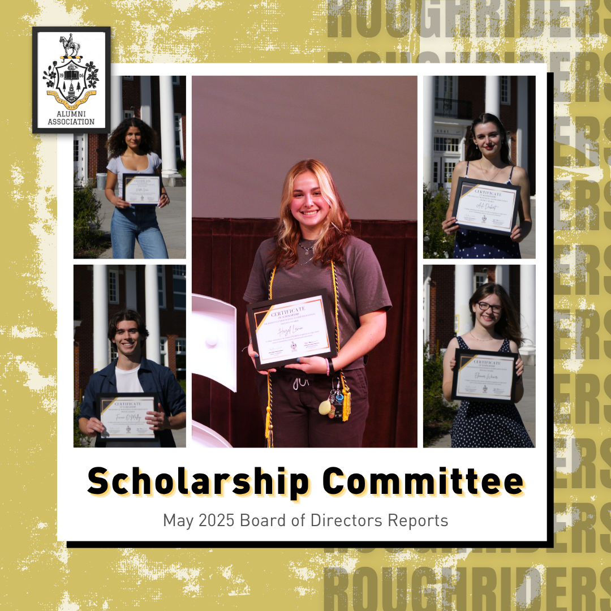
The Class of 2024 Scholarship was awarded at the end of May 2024, just after our last report. We met the 5 winners before the Senior Awards Ceremony to give them their checks and offer our congratulations. Their bios were published in the North Peninsula Review and are available on the RHSAA website. The winners were:
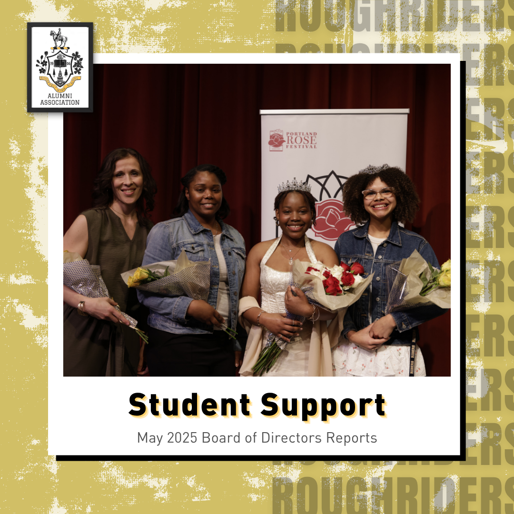
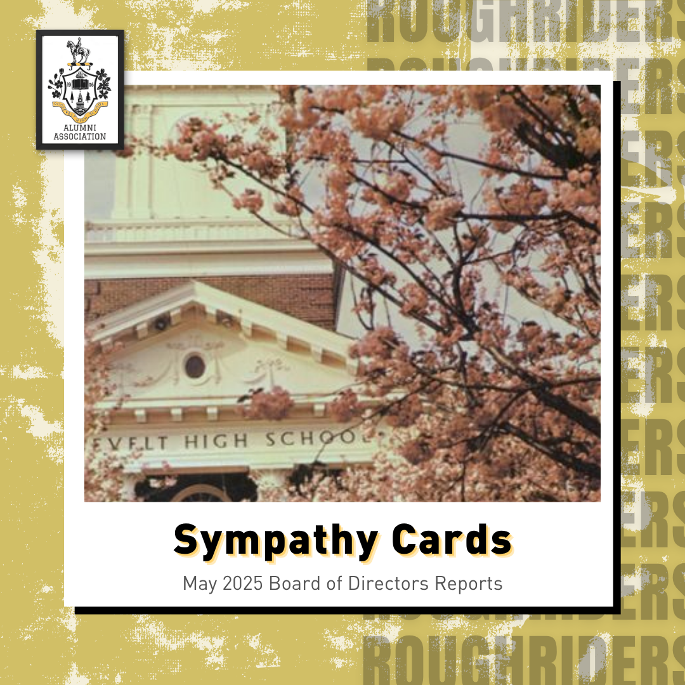
The Roosevelt High School Alumni Association sends out sympathy cards to the immediate family of any former RHS grad when
we are made aware of their passing. The information usually comes to us via email from someone or we see an obituary notice
in the paper. We have heard that our cards are well received by the family, so it is very helpful to include additional contact
information if you have it. We have sent out approximately 15 cards since December 2024, so if you know of someone who has
passed recently let us know so we can express our condolences to their family.
An email address for this project was established to streamline communication: obituaries@rooseveltalumni.org.
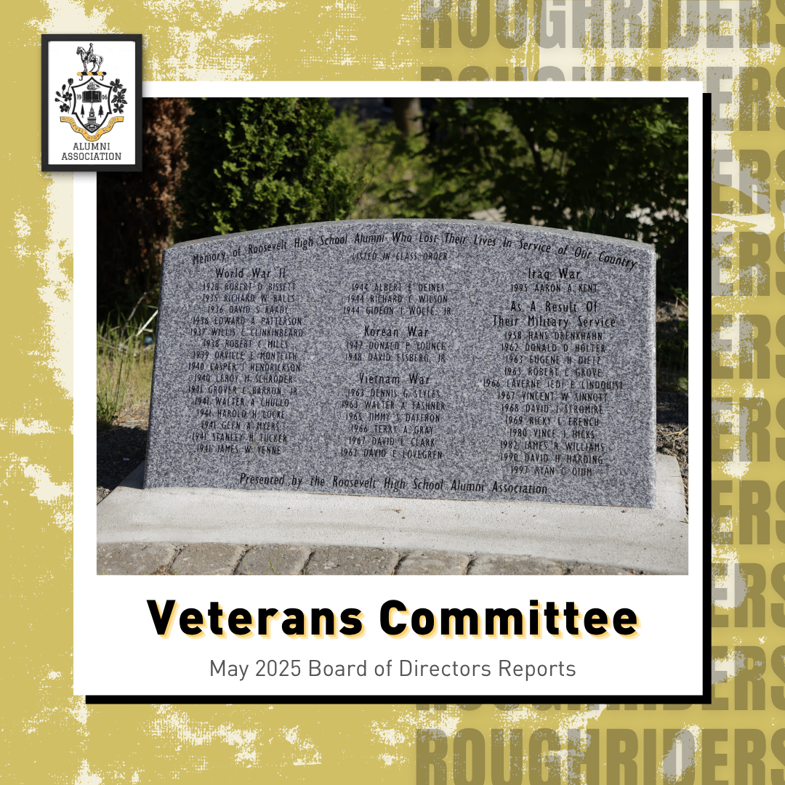
The most recent Memorial stone was placed on April 17, 2025. (4) Volunteers from the Bricklayers & Allied Craftworkers union
donated their time and materials to place this stone.
The new stone has the names engraved of all the alumni that we lost, connected with their military service.
I need to update information for the online video of alumni we have lost. It was last updated in 2023 and more names need to be
added. At that point, we can do an updated video. The stone does have the current list of the alumni that we have lost.
A very sincere thank you to the Alumni Association for your continued support of the Roosevelt High Veterans Memorial. So many
people played a major role in making this happen and it would not have happened without the support. I do not truly believe
that words can express how meaningful this memorial is to families that lost their loved one (Alumni) associated with their
military service. Now their loved one will be honored at Roosevelt and never forgotten.